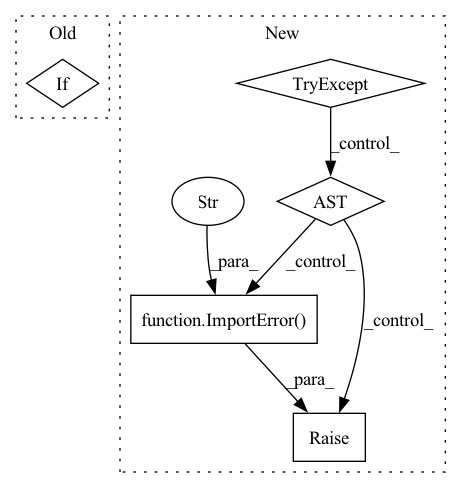

Pattern ID :34408

Before Change
assert wandb, "Missing wandb dependency, please install wandb"
if dedicated_run is None:
dedicated_run = wandb.run is None
if dedicated_run:
kwargs["project"] = kwargs.get("project", "deepchecks")
kwargs["config"] = kwargs.get("config", default_config)
wandb.init(**kwargs)
After Change
bool
If deticated run
try:
import wandb
except ImportError as error:
raise ImportError(
""set_wandb_run_state" requires the wandb python package. "
"To get it, run "pip install wandb"."
) from error
else:
if dedicated_run is None:
dedicated_run = wandb.run is None
In pattern: SUPERPATTERN
Frequency: 4
Non-data size: 5
Instances
Fragment ID: 98682177
Project Name: deepchecks/deepchecks
Commit Name: a5fcf3ee4a3a25908e587fc7d0458efd4eb7a30b
Time: 2022-05-04
Author: 71635444+yromanyshyn@users.noreply.github.com
File Name: deepchecks/utils/wandb_utils.py
M Class Name: AnonimousClass
N Class Name: AnonimousClass
M Method Name: set_wandb_run_state(2)
N Method Name: set_wandb_run_state(2)
M Parent Class:
N Parent Class:
M File Name: deepchecks/utils/wandb_utils.py
N File Name: deepchecks/utils/wandb_utils.py
M Start Line: 43
M End Line: 51
N Start Line: 37
N End Line: 52
'>
Before Change
Returns:
:obj:`str` or :obj:`dict`
if isinstance(value, dict):
self._storage_dtype = "struct"
return value
After Change
Returns:
:obj:`dict`
try:
import soundfile as sf // soundfile is a dependency of librosa, needed to decode audio files.
except ImportError as err:
raise ImportError("To support encoding audio data, please install "soundfile".") from err
if isinstance(value, str):
return {"bytes": None, "path": value}
elif isinstance(value, dict) and "array" in value:
'>
Fragment ID: 98682192
Project Name: huggingface/datasets
Commit Name: 6ca96c707502e0689f9b58d94f46d871fa5a3c9c
Time: 2022-01-21
Author: 42851186+lhoestq@users.noreply.github.com
File Name: src/datasets/features/audio.py
M Class Name: Audio
N Class Name: Audio
M Method Name: encode_example(2)
N Method Name: encode_example(2)
M Parent Class:
N Parent Class:
M File Name: src/datasets/features/audio.py
N File Name: src/datasets/features/audio.py
M Start Line: 43
M End Line: 54
N Start Line: 49
N End Line: 75
'>
Before Change
final_table = wandb.Table(columns=["header", "params", "summary", "value"])
final_table.add_data(*data)
wandb.log({f"{section_suffix}results": final_table}, commit=False)
if dedicated_run:
wandb.finish()
def _get_metadata(self, with_doc_link: bool = False):
After Change
// NOTE: Wandb is not a default dependency
// user should install it manually therefore we are
// doing import within method to prevent premature ImportError
try:
import wandb
from deepchecks.core.serialization.check_failure.wandb import \
CheckFailureSerializer as WandbSerializer
except ImportError as error:
raise ImportError(
"Wandb serializer requires the wandb python package. "
"To get it, run "pip install wandb"."
) from error
else:
dedicated_run = set_wandb_run_state(
dedicated_run,
'>
Fragment ID: 98682195
Project Name: deepchecks/deepchecks
Commit Name: a5fcf3ee4a3a25908e587fc7d0458efd4eb7a30b
Time: 2022-05-04
Author: 71635444+yromanyshyn@users.noreply.github.com
File Name: deepchecks/core/check_result.py
M Class Name: CheckFailure
N Class Name: CheckFailure
M Method Name: to_wandb(2)
N Method Name: to_wandb(2)
M Parent Class:
N Parent Class:
M File Name: deepchecks/core/check_result.py
N File Name: deepchecks/core/check_result.py
M Start Line: 522
M End Line: 536
N Start Line: 492
N End Line: 512
'>
Before Change
array, sampling_rate = torchaudio.load(path_or_file, format="mp3")
if self.sampling_rate and self.sampling_rate != sampling_rate:
if not hasattr(self, "_resampler") or self._resampler.orig_freq != sampling_rate:
self._resampler = T.Resample(sampling_rate, self.sampling_rate)
array = self._resampler(array)
sampling_rate = self.sampling_rate
After Change
raise ImportError("To support decoding "mp3" audio files, please install "sox".") from err
array, sampling_rate = self._decode_mp3_torchaudio(path_or_file)
else:
try: // try torchaudio anyway because sometimes it works (depending on the os and os packages installed)
array, sampling_rate = self._decode_mp3_torchaudio(path_or_file)
except RuntimeError:
try:
// flake8: noqa
import librosa
except ImportError as err:
raise ImportError(
"Your version of `torchaudio` (>=0.12.0) doesn"t support decoding "mp3" files on your machine. "
"To support "mp3" decoding with `torchaudio>=0.12.0`, please install `ffmpeg>=4` system package "
"or downgrade `torchaudio` to <0.12: `pip install "torchaudio<0.12"`. "
"To support decoding "mp3" audio files without `torchaudio`, please install `librosa`: "
"`pip install librosa`. Note that decoding will be extremely slow in that case."
) from err
// try to decode with librosa for torchaudio>=0.12.0 as a workaround
warnings.warn("Decoding mp3 with `librosa` instead of `torchaudio`, decoding is slow.")
try:
'>
Fragment ID: 98682180
Project Name: huggingface/datasets
Commit Name: 142404f9ce8fe4e7a72e8c59be70a012b6f707cd
Time: 2022-09-20
Author: polina@huggingface.co
File Name: src/datasets/features/audio.py
M Class Name: Audio
N Class Name: Audio
M Method Name: _decode_mp3(2)
N Method Name: _decode_mp3(2)
M Parent Class:
N Parent Class:
M File Name: src/datasets/features/audio.py
N File Name: src/datasets/features/audio.py
M Start Line: 290
M End Line: 308
N Start Line: 288
N End Line: 319